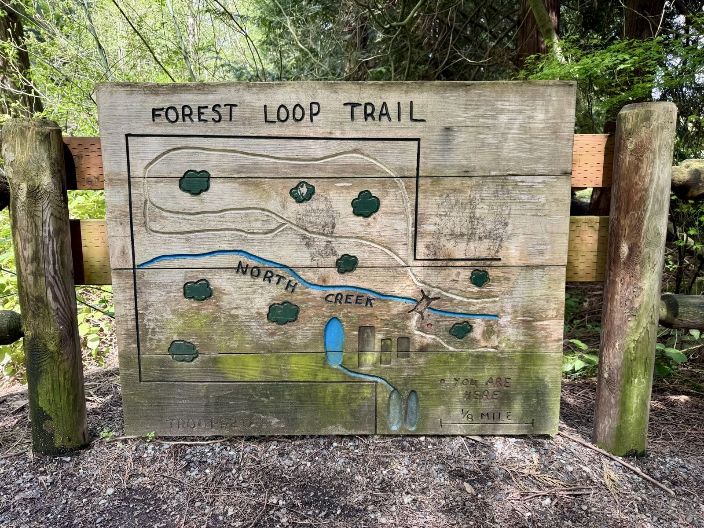
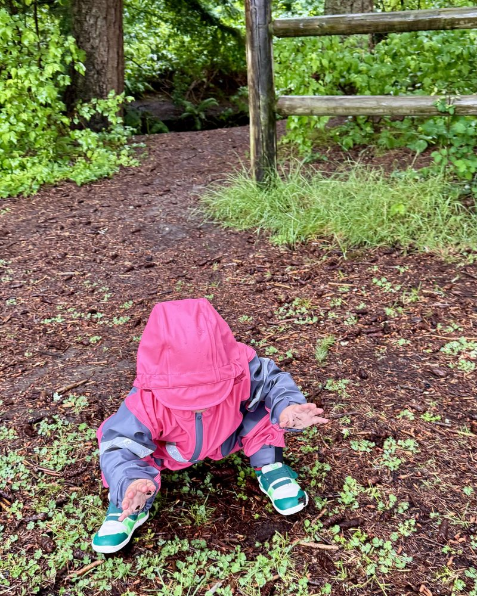
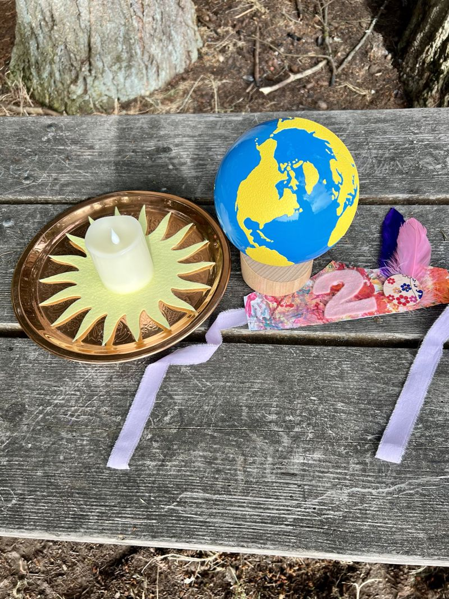

Frequently Asked Questions
Everything you need to know before your first morning in the forest.
Is my child too young for forest school?
Not at all! Babies are natural scientists. At 12 months, they’re absorbing the world through every sense: feeling bark, hearing birdsong, watching leaves dance. You’ll be amazed at what they take in.
My baby is 10 or 11 months. Can we still join?
Probably! The 12-month starting age is a guideline, not a hard cutoff. If your baby is sitting independently and you think they’d enjoy being outdoors with other kids, reach out and we’ll chat.
My child is turning 3. Can they keep coming?
Yes! Three year olds are welcome until their fourth birthday.
What if my child won’t sit for circle time?
Totally normal and totally fine. Toddlers learn by moving. If your child wants to wander during circle, let them. They’re still listening. We keep circles short and engaging for exactly this reason.
Where exactly do we meet?
We meet at McCollum Park in Everett. For the privacy and safety of our families, I share the exact meeting spot and parking details once you register or book a trial session.
How far is the walk from parking? Is there a bathroom?
The meeting spot is a few minutes’ walk from the parking lot, and the path is stroller friendly. There is a portable toilet about a five minute walk from our spot, and our privacy tent with a changing mat and children’s potty is set up right at class.
Do you meet all year? Are there any breaks?
We meet every Wednesday, all year round. Our only break is for winter, with no class on December 23 and December 30.
What if it rains?
We go! Rain is some of our best exploring weather. Think puddles, worms, dripping leaves, the sound of rain on the canopy. Dress in rain gear and embrace it. We only cancel for safety concerns like lightning, extreme wind, or hazardous air quality.
How will I know if class is canceled?
If we have to cancel, I’ll let you know as soon as I can by email, and I’ll post it on our Facebook and Instagram stories too. Any canceled session gets rescheduled or made up at no cost.
This doesn’t happen often. Since we started in June 2026, we’ve canceled just once, for poor air quality. I let families know the night before, and we made it up the following Tuesday. If thunder rolls in during class, we’ll head out early to stay safe. That’s happened once, and we wrapped up 30 minutes early.
How will I know what’s happening each week?
Every Tuesday morning I send families an email with a preview of the week: our nature focus, what to expect, and a weather heads up so you know how to dress.
Is this a drop-off class?
No. A parent or caregiver stays for the entire session. This is a shared experience. You’re learning alongside your kid, not dropping them off. That’s what makes it special.
What about diaper and clothes changes?
We bring a pop-up privacy tent to every session with a changing mat and a children’s potty inside. Parents handle their own child’s changes. It’s private, sheltered, and always set up before you arrive.
Can a grandparent or nanny bring my child?
Absolutely. Any trusted adult caregiver listed on your registration form is welcome. Just make sure they’ve read the handbook and know the expectations.
What should we wear?
Dress for mess. Layers, rain gear when it’s wet, closed-toe shoes with good grip (no open-toe sandals or Crocs on the trail), and clothes you don’t mind getting muddy. Pro tip: keep a “forest school bin” in your car with rain gear, backup boots, and a change of clothes.
What do I need to bring?
A small backpack your child can carry with: water, a nut-free snack, diapers/wipes if needed, a full change of clothes, and two clean washcloths in a ziplock for muddy hands. Apply sunscreen and bug spray before arrival. That’s it. We supply everything else.
What if we don’t have all the gear yet?
Totally fine! At our very first session, my daughter didn’t have rain boots yet either. She wore her rain suit and sneakers, and I felt better knowing she had her iksplor wool socks (opens in new tab) on, since wool stays warm even when it gets wet. Come as you are and build your gear over time. Our Recommended Gear page is a good place to start.

Can I bring my baby?
Yes, always. Babies in carriers are welcome, and babies under 12 months attend free with a paid sibling. They’re along for the ride, the fresh air, and the sounds of the forest.
Can I bring my older child?
Older siblings are welcome to come along on Wednesdays. They can explore the trail, be near their little one, and enjoy the forest with us. The stations, art supplies, and sensory materials are set up per enrolled child, so those stay with the enrolled 1 to 3s.
If you’d like an older sibling (around 4 to 5) to join in as a full participant with their own materials, reach out before registering and we’ll talk about whether it’s a good fit for them and for the group. Every child is different, and we want each one to land in the right place.
Do you celebrate birthdays?
Yes! For each birthday, we gather for a Walk Around the Sun, a Montessori tradition where the birthday child circles the sun once for every year of their life while we sing together. We sing our “Mixing Up a Birthday Cake” song and then the traditional Happy Birthday. The birthday child also receives a crown made from our class collaborative art.

Do you post photos of the kids?
Sometimes, but photos we share publicly never show children’s faces. If you’d rather your child not appear in any photos at all, you can opt out on your registration form.
My child has allergies. Is that okay?
We are a nut-free class. Each family brings their own snacks and we don’t share food between families. Please note all allergies on your registration form and carry any necessary medications (EpiPen, inhaler, etc.).
When should we stay home?
If your child has a fever, vomiting, diarrhea, an undiagnosed rash, or any contagious illness, please stay home and rest. Clear runny noses and seasonal allergies are totally fine. When in doubt, just reach out.
How much does it cost?
$99 a month, every month, whether it has four Wednesdays or five. Tuition is priced for the whole year, so the extra Wednesdays in five Wednesday months make up for the two weeks off in December. Payment is processed securely through Stripe.
Can we join partway through the year?
Yes! You can sign up anytime. Your first month is prorated based on the Wednesdays left in that month, and then tuition is $99 a month after that.
Started with a $15 trial? It counts as your first class. You’ll just pay for the Wednesdays left that month, and then it’s $99 a month after that.
Do you offer term passes?
Yes! A term pass covers three months of Wednesdays, paid up front, and costs less than paying $99 a month. Winter is $229, which saves you $68 and is our lowest price because of the holiday break. Spring, Summer, and Fall are $269 each, which saves you $28. Our terms follow the seasons, and each one ends with a Crown Celebration. Term passes start this Winter. Here are the upcoming terms:
Winter ($229, save $68): December 2, 2026 to February 24, 2027
Spring ($269, save $28): March 3 to May 26, 2027
Summer ($269, save $28): June 2 to August 25, 2027
Term passes are sold before each term starts, so sign up by December 2 to lock in Winter. Joining partway through a term? Start monthly, then switch to a term pass when the next term begins.
Do you offer a referral discount?
Yes! Refer a family who enrolls and you’ll get $25 off your next month’s tuition. There’s no limit, so the more families you refer, the more you save. Any credits beyond a single month’s tuition will roll over to the following month.
Do you offer a sibling discount?
Yes. Additional children are $49 a month each, so two children is $148 a month total. Siblings on a term pass are $109 for Winter (save $38) and $129 for other terms (save $18).
What’s your refund and cancellation policy?
We’re a small business and we plan our supplies, staffing, and session capacity based on enrollment. We’ve tried to make this policy fair to families while allowing us to operate sustainably.
Monthly subscription ($99 a month): Your enrollment is a rolling monthly subscription. Once you’re in, you’re in! You can cancel anytime with two weeks’ notice before your next billing date. No refunds for partial months or missed sessions.
Term pass ($229 Winter, $269 other terms): Nonrefundable. There are no refunds for missed sessions or for leaving partway through a term.
If Little Roots cancels a session due to weather or safety, we will reschedule or add a makeup session at no cost.
How do I register?
Head to our Register page! Fill out the registration form and you’ll get a confirmation right away. Within a day or two, we’ll email you a welcome message with your Stripe payment link. Monthly tuition renews automatically. Spots are limited to 15 families. Follow us on Instagram @littleroots.school (opens in new tab) for announcements.
When can I expect a response to my email?
I check email Tuesday through Friday and respond within 24 hours. Weekends and Mondays are family time, so messages sent then will get a reply Tuesday morning.
What if spots are full?
Class is limited to 15 families, and spots do fill up. If we’re full when you try to register, email us at hello@littleroots.school to be added to our waitlist. We’ll reach out as soon as a spot opens. You can also follow us on Instagram @littleroots.school (opens in new tab) to be the first to know.
“We love Little Roots! We have loved spending time outdoors rain or shine and all the activities.”